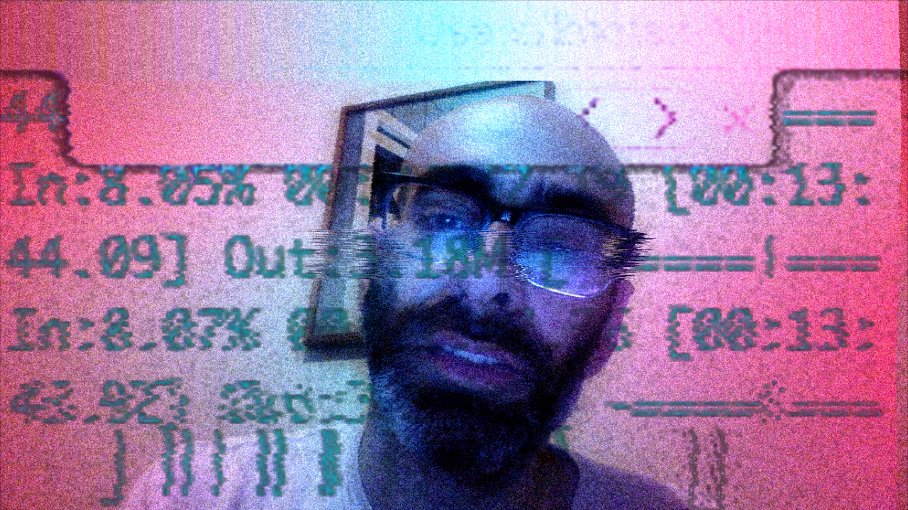
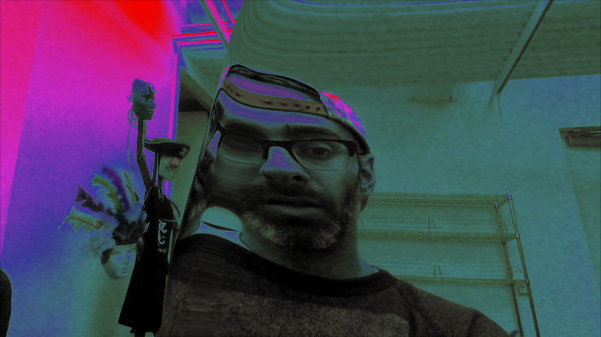
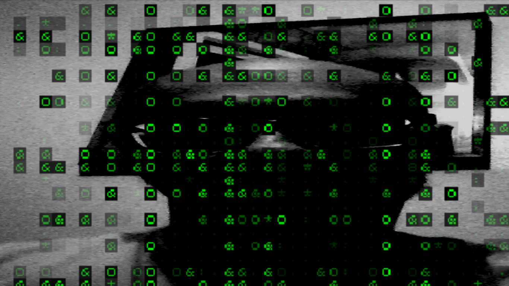
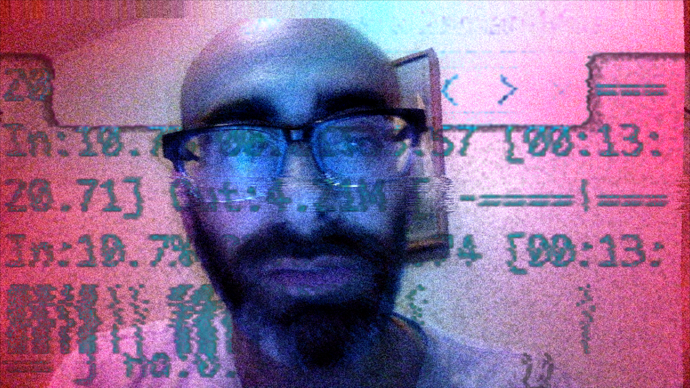

In the past 2 years I have been been attempting to replicate myself through live doppelgangers and software.
LeeBot currently consists of a series of semi-intelligent personal assistance software. It is also a performance.
The LeeBot software and management suite consists of:
Outsourced doppelgangers
A Manual of Procedures
Distributed LeeBot surReal-iDentity masks
LeeBot spam account software (currently at Version 2. Version 1.0 was shut down by Google)
LeeBot command-line identity tools


